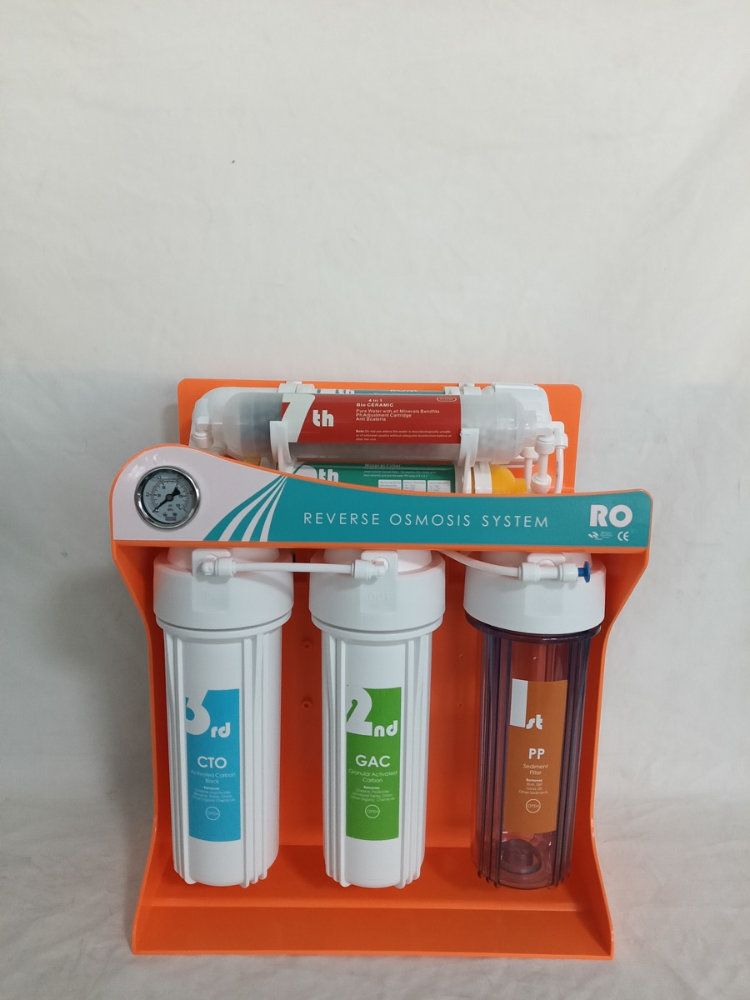

Built-In Pressure Tank RO Water Purifier 100G/200G
Built-In Pressure Tank RO Water Purifier 100G/200G — Storage tank: Built-in pressure tank.
Send Inquiry
Custom 5/6/7 Stage RO Water Purifier OEM/ODM Manufacturer is an inline water filter cartridge for drinking-water systems that need a specific media function and compact installation position. Confirm connector size, media purpose, compatible tubing, expected service life, label artwork and package plan. Key specifications include Size: Customized by stage quantity, bracket style, backboard layout and tank or pump configuration.
Custom 5/6/7 Stage RO Water Purifier OEM/ODM Manufacturer should be matched by media function, connector size, tubing compatibility, installation position and expected service life. Inline replacement filter cartridge buyers usually need clear labeling, retail box options and compatibility notes for purifier or dispenser programs.
For Custom 5/6/7 Stage RO Water Purifier OEM/ODM Manufacturer, use this model when the buyer needs a defined purifier configuration with practical installation details, replacement filter planning and export carton control. The page should answer how the unit fits into a kitchen, office or commercial drinking-water program before repeating broad RO or OEM claims.
| Item | Specification |
|---|---|
| Product Type | Custom 5, 6 or 7 stage RO water purifier system |
| Material | Food-grade plastic filter housings, plastic or metal bracket, optional pressure gauge and quick fittings |
| Size | Customized by stage quantity, bracket style, backboard layout and tank or pump configuration |
| Micron Rating | PP sediment filter commonly 1 micron or 5 micron; carbon and polishing stages configured by media plan |
| Flow Rate | Depends on RO membrane capacity, pump configuration, inlet pressure and requested OEM specification |
| Application | RO water purifier, water dispenser, pre-filtration system, commercial water treatment, replacement cartridge market |
| OEM/ODM | Logo, label, packaging, bracket color, front panel, filter stages, pressure gauge and carton design |
| MOQ | Confirm by configuration, packaging, artwork and customization level |
| Filtration stages | 5-stage, 6-stage or 7-stage layouts with PP, GAC/UDF, CTO, RO membrane, T33, mineral, alkaline, ceramic or specialty post-filter options. |
|---|---|
| Pressure gauge | One gauge, two gauges or no gauge. Gauge placement can be matched with the front panel and bracket design. |
| Bracket and backboard | Plastic bracket, colored bracket, simple backboard, full display front panel or customized bracket layout according to buyer selection. |
| Branding | Private label on front panel, cartridge labels, instruction manual, color box, master carton and replacement filter set packaging. |
| Packaging & Shipping | Inner protection, color box or brown carton, master carton, pallet loading and export marks can be quoted for container or mixed orders. |
Yes. The stage quantity can be configured according to target water quality, price point, replacement cartridge plan and distributor market requirements.
Yes. Single-gauge, dual-gauge and no-gauge layouts can be quoted. The final structure depends on your monitoring needs and selected bracket or front panel style.
Yes. Bracket color, front panel color and label color can be customized for confirmed OEM/ODM projects. Common options include white, orange, green and blue styles.
Yes. A simple backboard mounting layout is available when buyers prefer a lighter structure, lower cost or easier installation format for their local market.
Common stages include PP sediment filter, GAC/UDF activated carbon, CTO carbon block, RO membrane, T33 post carbon, mineral filter, alkaline filter and ceramic or specialty cartridges.
Please prepare logo files, label artwork, color preference, packaging requirements, manual language, target quantity and destination port. Yuchen Water can also help prepare basic label and carton layout.
Yes. Matched replacement filter sets can be packed together or supplied separately for distributor after-sales programs and repeat cartridge sales.
Built-In Pressure Tank RO Water Purifier 100G/200G — Storage tank: Built-in pressure tank.
Send Inquiry
Under-Sink Reverse Osmosis Water Filter — Membrane: RO 75GPD.
Send Inquiry
RO Membrane Element — Function: TDS, salts and heavy metal reduction.
Send InquirySend your filtration stage plan, pressure gauge choice, bracket or backboard style, quantity, branding needs and destination port. Our sales team will confirm the next steps.